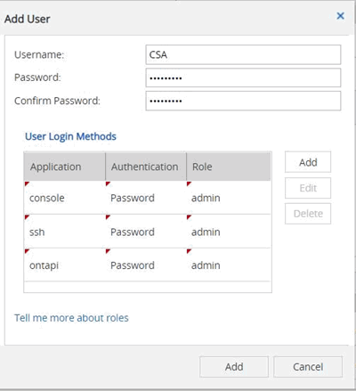

Note di rilascio
Note di rilascio
Inizia con Converged Systems Advisor
 Suggerisci modifiche
Suggerisci modifiche
Per iniziare a utilizzare Converged Systems Advisor, è necessario preparare l’ambiente, installare e configurare l’agente e aggiungere un’infrastruttura convergente al portale.
Potrebbe essere utile "Scopri come funziona Converged Systems Advisor" prima di iniziare.
Prepara il tuo ambiente
La preparazione dell’ambiente include la verifica del supporto per la configurazione, la creazione di account per l’agente e la registrazione per un account NetApp Support Site.
-
Verificare il supporto in "Tool di matrice di interoperabilità NetApp":
-
Verifica che Converged Systems Advisor supporti la tua infrastruttura convergente FlexPod.
-
Verificare di disporre di un server VMware ESXi supportato per l’agente Converged Systems Advisor.
Per ridurre al minimo l’utilizzo della larghezza di banda, NetApp consiglia di installare l’agente nello stesso data center dell’infrastruttura convergente FlexPod.
-
-
Assicurarsi che la rete in cui si installa l’agente consenta la connettività tra i componenti:
-
L’agente deve disporre di connettività a ciascun componente di FlexPod per poter raccogliere i dati di configurazione.
-
L’agente richiede inoltre una connessione Internet in uscita per comunicare con i seguenti endpoint:
-
csa.netapp.com
-
docker.com
-
docker.io
-
-
-
Creare account su ciascun componente di FlexPod.
L’agente richiede credenziali per raccogliere i dati di configurazione. Quando si configura l’agente, è necessario fornire le credenziali.
-
Accedere alla "Sito di supporto NetApp" e registratevi per un account, se non ne avete uno.
Per configurare l’agente e accedere al portale, è necessario disporre di un account NetApp Support Site.
Creazione di account sui dispositivi FlexPod
È necessario impostare un account di sola lettura in Cisco UCS Manager e sugli switch Cisco Nexus. Per i sistemi ONTAP e VMware è necessario un account amministratore. È possibile impostare un account di accesso in sola lettura per altri utenti sull’APIC. L’agente utilizza questi account per raccogliere i dati di configurazione da ciascun dispositivo.
Creare un account di sola lettura per Cisco UCS Manager
-
Accedere a Cisco UCS Manager.
-
Creare un utente autenticato localmente denominato csa-readonly.

Tutti i nuovi utenti sono di sola lettura per impostazione predefinita.
Crea un account di sola lettura per i tuoi switch Nexus
-
Accedi a ogni switch Nexus utilizzando SSH o telnet.
-
Accedere alla modalità di configurazione globale:
configure terminal
-
Creare un nuovo utente:
username [name] password [password] role [role] .. Salvare la configurazione:
copy running configuration startup configuration
-
Se si utilizza un server TACACS+ e si devono concedere privilegi utente CSA, visitare il sito Concessione di privilegi utente CSA mediante un server TACACS+.
Creare un account admin per ONTAP
-
Accedere a Gestore di sistema di OnCommand e fare clic sull’icona delle impostazioni:
.
-
Nella pagina utenti, fare clic su Aggiungi.
-
Inserire un nome utente e una password e aggiungere ssh, ontapi e console come metodi di accesso utente con accesso admin.

Creare un account di sola lettura per VMware
-
Accedere a vCenter.
-
Nel menu vCenter, scegliere Amministrazione.
-
In ruoli, scegliere sola lettura.
-
Fare clic sull’icona Clone role action (Copia azione ruolo) e modificare il nome in CSA.
-
Selezionare il ruolo CSA appena creato.
-
Fare clic sull’icona Edit role (Modifica ruolo).
-
In Edit role (Modifica ruolo), scegliere Global (Globale), quindi selezionare Licenses (licenze).
-
Nella barra laterale, selezionare Single Sign on→Users and groups→Create a new user.
-
Assegnare un nome al nuovo utente CSARO nel DOMINIO vpshere.local.
-
Nella barra laterale, selezionare permessi globali in controllo accessi.
-
Scegliere l’utente CSARO e assegnare IL RUOLO CSA.
-
Accedere al client Web.
USA ID utente: CSARO@vsphere.local e password creata in precedenza.
Creare un account di sola lettura sull’APIC
-
Fare clic su Admin.
-
Fare clic su Crea nuovi utenti locali.
-
In User Identity (identità utente), immettere le informazioni sull’utente.
-
In Security (sicurezza), selezionare tutte le opzioni del dominio di protezione.
-
Fare clic su + per aggiungere certificati utente e chiavi SSH, se necessario.
-
Fare clic su Avanti.
-
Fare clic su + per aggiungere ruoli per il dominio.
-
Selezionare Nome ruolo dal menu a discesa.
-
Selezionare Read (lettura) per il tipo di privilegio del ruolo Role Privilege Type (tipo di privilegio del
-
Fare clic su fine.
Implementazione dell’agente
È necessario implementare l’agente Converged Systems Advisor su un server VMware ESXi. L’agente raccoglie i dati di configurazione relativi a ciascun dispositivo dell’infrastruttura convergente FlexPod e li invia al portale Converged Systems Advisor.
Download e installazione dell’agente
È necessario implementare l’agente Converged Systems Advisor su un server VMware ESXi.
Per ridurre al minimo l’utilizzo della larghezza di banda, è necessario installare l’agente su un server VMware ESXi che si trova nello stesso data center della configurazione FlexPod. L’agente deve essere connesso a ciascun componente FlexPod e a Internet in modo da poter inviare i dati di configurazione al portale Converged Systems Advisor utilizzando la porta HTTPS 443.
L’agente viene implementato come macchina virtuale VMware vSphere da un modello OVF (Open Virtualization Format). Il modello è basato su Debian con 1 vCPU e 2 GB di RAM (potrebbe essere necessario un numero maggiore di sistemi FlexPod multipli o maggiori).
-
Scarica l’agente:
-
Accedere a. "Portale Converged Systems Advisor".
-
Fare clic su Download Agent.
-
-
Installare l’agente implementando il modello OVF sul server VMware ESXi.
Su alcune versioni di VMware, potrebbe essere visualizzato un avviso durante l’implementazione del modello OVF. La macchina virtuale è stata sviluppata sulla versione più recente di vCenter con compatibilità hardware per le versioni precedenti, il che potrebbe causare l’avviso. Esaminare le opzioni di configurazione prima di confermare l’avviso e procedere con l’installazione.
Impostazione della rete per l’agente
Per consentire la comunicazione tra l’agente e i dispositivi FlexPod e tra l’agente e diversi endpoint Internet, è necessario assicurarsi che la rete sia configurata correttamente sulla macchina virtuale dell’agente. Si noti che lo stack di rete viene disattivato sulla macchina virtuale fino all’inizializzazione del sistema.
-
Assicurarsi che una connessione Internet in uscita consenta l’accesso ai seguenti endpoint:
-
csa.netapp.com
-
docker.com
-
docker.io
-
-
Accedere alla console della macchina virtuale dell’agente utilizzando il client VMware vSphere.
Il nome utente predefinito è
csae la password predefinita ènetapp.
Per motivi di sicurezza, SSHD è disattivato per impostazione predefinita. -
Quando richiesto, modificare la password predefinita e prendere nota della password, perché non può essere recuperata.
Dopo aver modificato la password, il sistema si riavvia e avvia il software dell’agente.
-
Se DHCP non è disponibile nella subnet, configurare un indirizzo IP statico e le impostazioni DNS utilizzando gli strumenti standard di Debian, quindi riavviare l’agente.
La configurazione di rete per la macchina virtuale Debian è DHCP per impostazione predefinita. NetworkManager è installato e fornisce un’interfaccia utente di testo che è possibile avviare dal comando nmtui (vedere la "pagina man" per ulteriori dettagli).
Per ulteriori informazioni sulla rete, vedere "La pagina di configurazione di rete nel wiki Debian".
-
Se le policy di sicurezza stabiliscono che l’agente deve trovarsi su una rete per comunicare con i dispositivi FlexPod e un’altra rete per comunicare con Internet, aggiungere una seconda interfaccia di rete in vCenter e configurare le VLAN e gli indirizzi IP corretti.
-
Se per l’accesso a Internet è necessario un server proxy, eseguire il seguente comando:
sudo csa_set_proxyIl comando genera due prompt e mostra il formato richiesto per la voce del proxy. Il primo prompt consente di specificare un proxy HTTP, mentre il secondo consente di specificare un proxy HTTPS.
Di seguito viene visualizzato il prompt per il proxy HTTP:

-
Una volta attivata la rete, attendere circa 5 minuti per l’aggiornamento e l’avvio del sistema.
Quando l’agente è operativo, sulla console viene visualizzato un messaggio broadcast.
-
Verificare la connettività eseguendo il seguente comando CLI dall’agente:
curl -k https://www.netapp.com/us/index.aspx
Se il comando non riesce, verificare le impostazioni DNS. La macchina virtuale dell’agente deve avere una configurazione DNS valida e la capacità di raggiungere csa.netapp.com.
Installazione di un certificato SSL sull’agente
L’agente crea un certificato autofirmato al primo avvio della macchina virtuale. Se necessario, è possibile eliminare il certificato e utilizzare il proprio certificato SSL.
Converged Systems Advisor supporta quanto segue:
-
Qualsiasi crittografia compatibile con OpenSSL versione 1.0.1 o superiore
-
TLS 1.1 e TLS 1.2
-
Accedere alla console della macchina virtuale dell’agente.
-
Selezionare
/opt/csa/certs -
Eliminare il certificato autofirmato creato dall’agente.
-
Incollare il certificato SSL.
-
Riavviare la macchina virtuale.
Configurazione dell’agente per rilevare l’infrastruttura FlexPod
È necessario configurare l’agente in modo che raccolga i dati di configurazione da ciascun dispositivo nell’infrastruttura convergente FlexPod.
-
Aprire un browser Web e inserire l’indirizzo IP della macchina virtuale dell’agente.
-
Accedere all’agente inserendo il nome utente e la password dell’account NetApp Support Site.
-
Aggiungere i dispositivi FlexPod che l’agente deve rilevare.
Sono disponibili due opzioni:
-
Fare clic su Aggiungi un dispositivo per immettere i dettagli relativi ai dispositivi FlexPod, uno alla volta.
-
Fare clic su Import Devices (Importa dispositivi) per compilare e caricare un modello CSV che include i dettagli su tutti i dispositivi.
Tenere presente quanto segue:
-
Il nome utente e la password devono corrispondere all’account creato in precedenza per la periferica.
-
Se nell’ambiente UCS è configurata la gestione utente LDAP, è necessario aggiungere il dominio dell’utente prima del nome utente. Ad esempio: Locale/csa-readonly
-
-
Ogni dispositivo nell’infrastruttura FlexPod deve essere visualizzato nella tabella con un segno di spunta.

Aggiunta di un’infrastruttura al portale
Dopo aver configurato l’agente, invia le informazioni relative a ciascun dispositivo FlexPod al portale Converged Systems Advisor. È ora necessario selezionare ciascuno di questi componenti nel portale per creare un’intera infrastruttura che è possibile monitorare.
-
In "Portale Converged Systems Advisor", Fare clic su Aggiungi infrastruttura.
-
Completare la procedura per aggiungere l’infrastruttura:
-
Inserire i dettagli di base sull’infrastruttura.
Se si sta aggiungendo un’infrastruttura Cisco ACI, inserire yes quando viene richiesto se il FlexPod utilizza Cisco UCS Manager e inserire Nexus switch in modalità ACI quando viene richiesto il tipo di configurazione di rete in cui si trova il FlexPod.
-
Selezionare ciascun dispositivo che fa parte della configurazione FlexPod.
Quando si seleziona un dispositivo, la colonna idoneità visualizza idoneo o non idoneo. Un dispositivo non è idoneo se rilevato da un altro agente. Una volta selezionati tutti i componenti richiesti, accanto a ciascun tipo di dispositivo viene visualizzato un segno di spunta verde.

-
Aggiungere il "Numero di serie di Converged Systems Advisor" per sbloccare la funzionalità delle chiavi.
-
Leggere il riepilogo, accettare i termini del contratto di licenza e fare clic su Add Infrastructure (Aggiungi infrastruttura).
-
Converged Systems Advisor aggiunge l’infrastruttura al portale e inizia a raccogliere i dati di configurazione relativi a ciascun dispositivo. Attendere alcuni minuti per consentire all’agente di raccogliere informazioni dai dispositivi.
Condivisione di un’infrastruttura con altri utenti
La condivisione di un’infrastruttura convergente consente a un’altra persona di accedere al portale Converged Systems Advisor per visualizzare e monitorare la configurazione. La persona con cui condividi l’infrastruttura deve disporre di un "Sito di supporto NetApp" account.
-
Nel portale Converged Systems Advisor, fare clic sull’icona Impostazioni, quindi su utenti.

-
Selezionare la configurazione dalla tabella User (utente).
-
Fare clic su icona.
-
Inserire uno o più indirizzi e-mail accanto al ruolo utente che si desidera fornire.
È possibile inserire più indirizzi e-mail in un singolo campo premendo Invio dopo il primo indirizzo e-mail. -
Fare clic su Invia.
L’utente deve ricevere un’e-mail contenente le istruzioni per l’accesso a Converged Systems Advisor.
Concessione di privilegi utente CSA mediante un server TACACS+
Se si utilizza un server TACACS+ e si devono concedere privilegi utente CSA per gli switch, è necessario creare un gruppo di privilegi utente e concedere al gruppo l’accesso ai comandi di configurazione specifici richiesti da CSA.
I seguenti comandi devono essere scritti nel file di configurazione del server TACACS+.
-
Immettere quanto segue per creare un gruppo di privilegi utente con accesso di sola lettura: Group=nome_gruppo { default service=deny service=exec{ privv-lvl=0 } }
-
Immettere quanto segue per consentire l’accesso ai comandi richiesti da CSA: cmd=show { permit "ambiente" permit "versione" permit "funzione" permit "set di funzioni" permit "running-config" permit "interfaccia" permit "interfaccia" permit "inventario" permit "licenza" permit "modulo" permit "port-channel database" permit "ntp peer" permit "utilizzo di licenze" permit "switch-config" permessi "0-tmtmttint" permessi "switch" permesso "cdp neighbor detail" permesso "vlan" permesso "vpc" permesso "vpc peer-keealive" permesso "mac address-table" permesso "lacp port-channel" permesso "policy-map" permesso "policy-map system type qos" permesso "policy-map system type network-qos" permesso "zoneset active" permesso "san-port-channel summary" permesso "database clogs" permesso "dettaglio database" dati" permesso "clogs" permesso "zoneset active" permesso "vsan" permesso "utilizzo vsan" permesso "appartenenza vsan" }
-
Immettere quanto segue per aggiungere l’account utente CSA al gruppo appena creato: User=User_account{ member=group_name login=file/etc/passwd }
Configurazione delle notifiche
Se disponi di una licenza Premium, Converged Systems Advisor ti avvisa in caso di modifiche all’infrastruttura FlexPod tramite notifiche via email.
-
Nel portale Converged Systems Advisor, fare clic sull’icona Impostazioni, quindi su Impostazioni avvisi.
-
Controllare la notifica che si desidera ricevere per ogni infrastruttura convergente che dispone di una licenza Premium.
Ciascuna notifica include le seguenti informazioni:
- Errori di raccolta
-
Avvisa l’utente quando Converged Systems Advisor non è in grado di raccogliere dati da un’infrastruttura convergente.
- Agente offline
-
Avvisa l’utente quando un agente di Converged Systems Advisor non è online.
- Daily Alert Digest
-
Avvisa l’utente in merito alle regole non riuscite che si sono verificate il giorno precedente.
-
Fare clic su Save (Salva).
Converged Systems Advisor invierà ora notifiche e-mail agli utenti associati all’infrastruttura convergente.